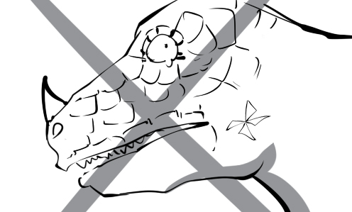

adversity: Although Robinson is in adversity, he still shows courage and optimism.
affair: Mr. Thomas is fired because he made a serious mistake in an important affair.
amuse: I am the only one who is amused by the comedy.
assert: The CEO asserts that our company's business prospects are really good.
autobiography: We can find a vivid description of his career in his autobiography
babble: David is babbling an excuse for being late for work.
basement: Peter lives in the basement of his mother's house because he can't afford his own apartment.
belongings: Peter went to the Lost and Found office to claim his lost belongings.
bribe: Andrew bribed the CEO to promote him to sales manager.
brutal: The police are investigating a young man's brutal murder.
budget: Their son can study at Harvard University thanks to their sufficient budget.
cease-fire: Finally, the two sides achieve an cease-fire agreement after many years of fighting.
challenging: For me mathematics is one of the most challenging subjects in high school.
compete: Usain Bolt has to compete with some excellent athletes in this race.
condemnation: There was widespread condemnation of his ignoble act.
cope: The security guards know how to cope with ones who don't obey the regulations.
critique: The critique of the movie is very positive, so I will go watch it next week.
decay: The little boy's teeth decay because he eats too much sweet.
decry: Many women took to the streets to decry women's rights abuses.
definite: The professor always has definite answers to all the questions asked by students.
deliberate: Peter made a deliberate attempt to play a prank on his friend.
dispatch: Peter dispatches many letters to Mary but she never answers them.
dispute: He has a dispute with his colleague over the way they carry out this project.
domain: The professor cannot answer this question because it is outside his domain.
editor: The editor of The New York Times is the position that every journalist dreams about.
embattle: The troops are already embattled. They are just waiting for an attack order.
engrave: The craftsman is engraving the champion's name on the trophy.
extinction: It is said that a crash of a large meteorite with the Earth was the primary cause of dinosaur extinction.

fatigue: David is suffering from fatigue after working all night long.
favorable: The manager receives highly favorable replies from many colleagues.
feat: Building the pyramids was a brilliant feat of engineering.
fidelity: Tony never doubts his wife's fidelity because she never has her eyes on any other guys.

frontier: Many Mexicans cross the United States–Mexico frontier to seek for a better life.

gauge: John is gauging the cost of groceries he has to buy for his party.
gradient: They are struggling to drive up the steep gradient.
graze: The enemy shoots him, but fortunately the arrow just grazes his cheek.
gross: In 2011, the gross income of our company is ten million dollars.
hammer away: My team have been hammering away at this project for three months.

handicraft: The traditional handicraft of this village is bamboo hat weaving.
hardy: These hardy bulls can survive even the rough winter weather.
harness: They try to harness this cave as a source of stone and metal.
imperfection: This shirt was discounted up to 50% because of its imperfection.
implication: The implication of her silence is that she is angry at her boyfriend.
incline: The violent wind causes the ship to incline to the right.
inedible: Don't eat that mushroom! It is inedible and poisonous.
inscription: There is an inscription reading To Mary, with love from Andy on the front page of the book.
intense: The intense heat makes us sweat so much.
latitude: This newspaper house have latitude in reporting on Iraq War.
latter: Between Pepsi and Coca Cola, I like the latter better.
lava: Lava is extremely hot. Its temperature can vary between 700 and 1200 degree Celsius.
leakage: There is a leakage of water from the damaged water tank.
legal: David wants to start a career in the legal field, so he decides to become a lawyer.
legume: Mary loves legumes because they are really good for her health.
malfunction: The car stops suddenly because of a malfunction in the main engine.
manifestation: Coughing continuously is a manifestation of the flu.
marketplace: We have to compete with many powerful companies in the global marketplace.
massacre: Many people were killed brutally in the cold-blooded massacre.
mishandle: Chemicals explodes because the chemist mishandles the experiment.
nocturnal: Owls are nocturnal birds. They sleep during the day and emerge at night to hunt small preys.
norm: Two children per family has been the norm in the modern society.
nuptial: Jennifer looks so pretty and happy on her nuptial day.
offense: The police officer pulled Peter over because of his traffic offense.
organism: This beautiful pond is full of organisms such as frogs, fishes, crabs…
ornament: Tinsel would be a great ornament to the birthday party.
outcome: Candidates are waiting nervously for the outcome of the interview.
outweigh: We shouldn’t carry out this risky plan because the risks outweigh the benefits.
pare: The mother is paring apples for her children.
parody: This hilarious play is a parody of a famous Greek epic.
partisan: Mr. Clinton was very disappointed because the audience had a partisan attitude towards the other candidate.
peninsula: The Indochinese peninsula consists of Vietnam, Laos and Cambodia.
precision: It takes a great deal of precision to shoot at long-distance targets.
preference: He has a preference for an iPad over a laptop.
prescription: You have to offer the pharmacist your prescription in order to buy this painkiller.
prison: This man was sentenced to 25 years in prison for killing his wife.
ramshackle: He lives alone in a ramshackle cabin in the woods.
ratio: The ratio of boys to girls in this class is 2 to 1.
ravenous: The poor man is ravenous because he hasn't eaten anything for almost three days.
readily: I readily accepted when my classmate offered me a loaf of bread.
realize: Peter realizes his lifelong ambition is to become a doctor.
rival: He will compete against his primary rival in the next round.
sanction: His business plan is sanctioned by the board of directors.
sanctuary: The Buddhist priest leads a life of holiness in this sanctuary.
satire: This movie is a stinging satire on the billionaire's life.
savage: The pirates carried out a savage attack on the poor sailor.
scarecrow: The farmer put a scarecrow up in the field to scare the birds away.
settle: After many years of traveling, he settles down and raises a family in his hometown.
tailor: This book is tailored to suit young readers.
tangle: Tony is my best friend. He always helps me out whenever I am stuck in a tangle.
temperate: Pine trees can only grow in temperate regions.

tempting: This store attracts many consumers by offering a tempting discount program.
tentative: Tom just can make a tentative choice on which vase to buy because he likes them both.
throne: Memphis inherited the throne from his father when he was just a child.
unanimous: The directors are unanimous in where they should place the new factory.
underlying: Poverty is an underlying cause of the high crime rate.
unfold: Finally, Andrew got enough courage up to unfold his feelings for Mary.
upcoming: The team leader reminds me of the upcoming meeting.

upset: Peter is really upset because he lost his wallet on the bus today.
vacate: They have to vacate their house because it is too old and can collapse anytime.
venom: Cobra venom can kill a person within a minute of entering his bloodstream.
virtually: He was virtually penniless after his company went bankrupt.